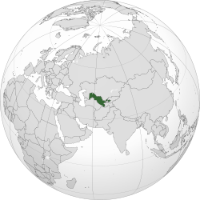

🎭 Cultura
A cultura usbeque é resultado da mistura de tradições persas, turcas e islâmicas. O país é famoso por sua arquitetura de azulejos azuis, música tradicional, dança e artesanato em seda e cerâmica.


O Usbequistão é um país da Ásia Central conhecido por sua rica história ligada à antiga Rota da Seda. Suas cidades preservam magníficas mesquitas, palácios e mausoléus que atraem visitantes do mundo inteiro.
A cultura usbeque é resultado da mistura de tradições persas, turcas e islâmicas. O país é famoso por sua arquitetura de azulejos azuis, música tradicional, dança e artesanato em seda e cerâmica.
A culinária do Usbequistão é rica em carnes, arroz e especiarias.
A cidade de Samarcanda é considerada uma das cidades habitadas mais antigas do mundo e foi um dos principais centros comerciais da famosa Rota da Seda.